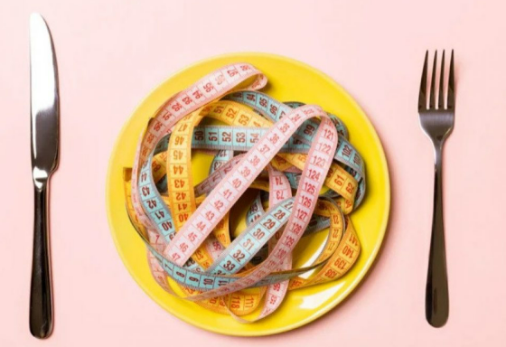
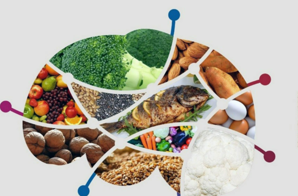

Definición general
Los TCA son trastornos mentales que afectan la forma en que las personas se alimentan y perciben su cuerpo. Pueden dañar la salud física, emocional y social.
Fisiopatología
Los trastornos de la conducta alimentaria producen una interacción compleja entre factores biológicos, psicológicos y sociales. A nivel fisiológico, generan alteraciones hormonales (como la leptina, serotonina y dopamina), cambios en el metabolismo y en el sistema nervioso que afectan la regulación del apetito, la saciedad y el control de impulsos. Estos desequilibrios explican la persistencia de los síntomas y las complicaciones médicas.
Factores de riesgo
- Presión social y estereotipos de belleza.
- Baja autoestima o perfeccionismo.
- Antecedentes familiares de TCA.
- Deportes o actividades que exigen cierto peso.
Prevención y ayuda
- Fomentar imagen corporal positiva.
- Buscar ayuda profesional a tiempo.
- Apoyo familiar y social es fundamental.